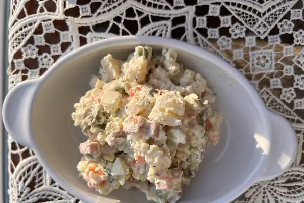

A Russian and Eastern European potato salad; one version of it at least! Best served cold with some good bread!
Place potatoes and carrots into a large pot and cover with salted water; bring to a boil. Reduce heat to medium-low and simmer until tender, about 15 minutes. Drain and rinse with cold water until cold. Dice potatoes and carrots.
Combine potatoes, carrots, sweet peas, pickles, onion, bologna, and eggs together in a large bowl. Stir mayonnaise, sour cream, salt, and black pepper gently into potato mixture until well combined. Cover bowl with plastic wrap and refrigerate until cold, at least 30 minutes.